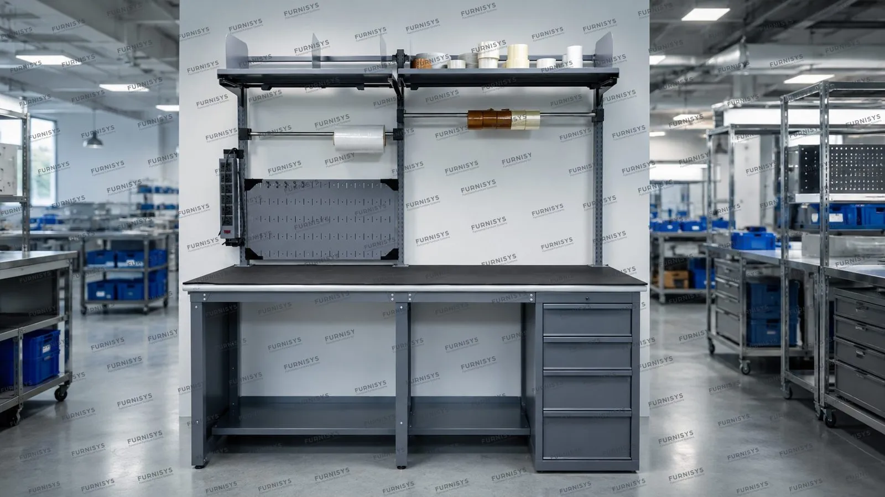

Packaging Workstation for Tool & Die Manufacturing:
Situation
A 15-20 kg precision die, with no fixed place to pack it
A manufacturer of tungsten carbide and steel dies used in metal forming approached Furnisys with a specific requirement: a dedicated workstation for packaging finished dies before dispatch. The client operated in the Tool & Dies sub-industry within Manufacturing, and had previously seen a Furnisys packaging station design, which shortened the consultation process to a set of targeted modifications rather than a build from scratch.
The components being packaged were precision-machined dies weighing approximately 15–20 kg each. The weight itself wasn't the primary constraint - careful handling and consistent, protective packaging was.
Complication
Wrapping, boxing, labeling, weighing - four steps, four different stops
The packaging function needed to bring together several activities that were previously scattered across the workspace:
-
- Organized storage for corrugated boxes in different sizes
-
- Shelving for protective film rolls and packaging accessories
-
- Cabinet space for tools and consumables used during wrapping and boxing
-
- A labeling point for inventory tracking and box marking
-
- A weighing point to confirm packaged item weight before dispatch
Without a single, purpose-built point for these steps, packaging teams handling precision components are left improvising - moving between storage, work surface, and weighing points, which adds handling risk for parts that require careful treatment.
Question
How do you fit an entire packaging process into one station?
How do you configure one workstation to support wrapping, boxing, labeling, and weighing for precision industrial components - without adding extra movement or handling steps to the process?
Answer:
One workstation, configured around the sequence - not a generic layout
Furnisys configured a Scitec workstation around the specific sequence of the client's packaging workflow:
-
- Postform laminated worktop - the primary work surface for wrapping dies in protective film
-
- Roll holders (extended mount) - positioned for direct access to film rolls during wrapping
-
- Pegboard with binstrip - holds tape dispensers, cutters, and small tools within reach of the work surface
-
- Adjustable overhead shelving - organized storage for corrugated boxes of varying sizes, positioned above the worktop for direct access after wrapping
-
- Base cabinet with drawers - stores labels and packaging consumables, keeping the final packaging step at the same station
-
- Vertical power strip (15A, 6 outlets) - supports the digital scale and any powered tools at the station
-
- Bottom shelf - additional storage within the same footprint
Execution
The packaging sequence was structured so each step happened without leaving the workstation: dies were wrapped at the laminated worktop using the mounted roll holder, an appropriately sized box was taken from the organized upper shelf, the packed item was weighed on a digital scale at the station, and labels stored in the base cabinet were applied before the item moved to dispatch.
Outcome
Bringing storage, work surface, tool access, and weighing into a single station reduced the movement required to complete each package and gave the packaging team a consistent, repeatable process. For a manufacturer handling precision components, the practical gains were:
-
- A defined, organized packaging point rather than an improvised process
-
- Reduced handling steps between wrapping, boxing, labeling, and weighing
-
- A consistent sequence that supports careful handling of precision parts
-
- A configuration that can be replicated or expanded as packaging volume changes
System Continuity
The workstation configuration is modular - shelving, cabinet units, and accessory mounts can be adjusted or added as the client's packaging volume or product range changes, without replacing the core structure.

FAQ
What should a packaging workstation for precision-manufactured components include?
At minimum, a defined work surface, organized storage for packaging materials (boxes, film, labels), accessible tool storage, and a weighing point - configured so the operator doesn't need to leave the station to complete a package.
Can a Furnisys workstation be configured around an existing packaging workflow?
Yes. Configuration is based on the sequence of tasks in the client's actual process - in this case, wrapping, boxing, labeling, and weighing - rather than a fixed, generic layout.
Is this type of workstation suitable for components in other weight ranges?
The base cabinet, worktop, and shelving system can be specified for different load requirements. The example in this case study involved components in the 15–20 kg range.
Does the workstation support labeling and inventory tracking?
Yes. Base cabinet drawers are used to store labels and consumables at the same station, supporting consistent box marking as part of the packaging sequence.
How long does configuration typically take once requirements are defined?
When a client can reference an existing Furnisys design and request modifications, the consultation and configuration process is faster than a design built from scratch.